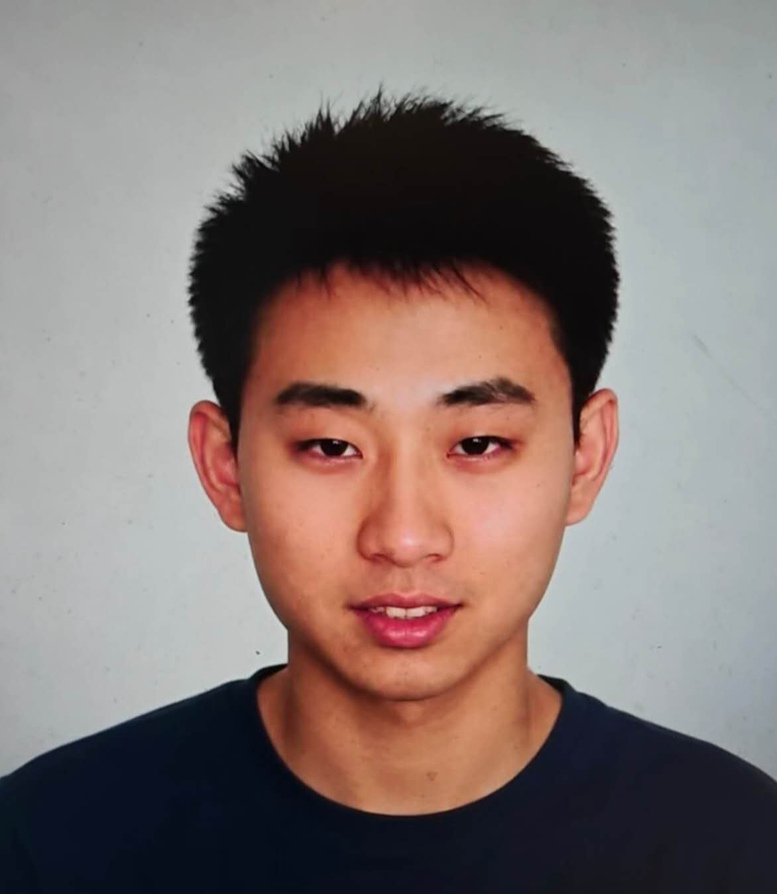
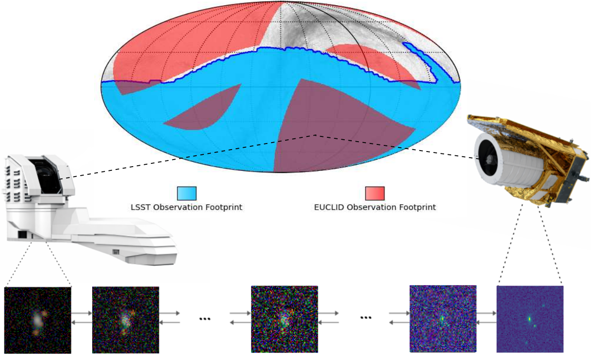
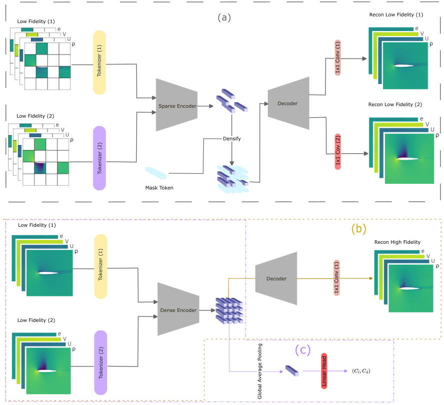
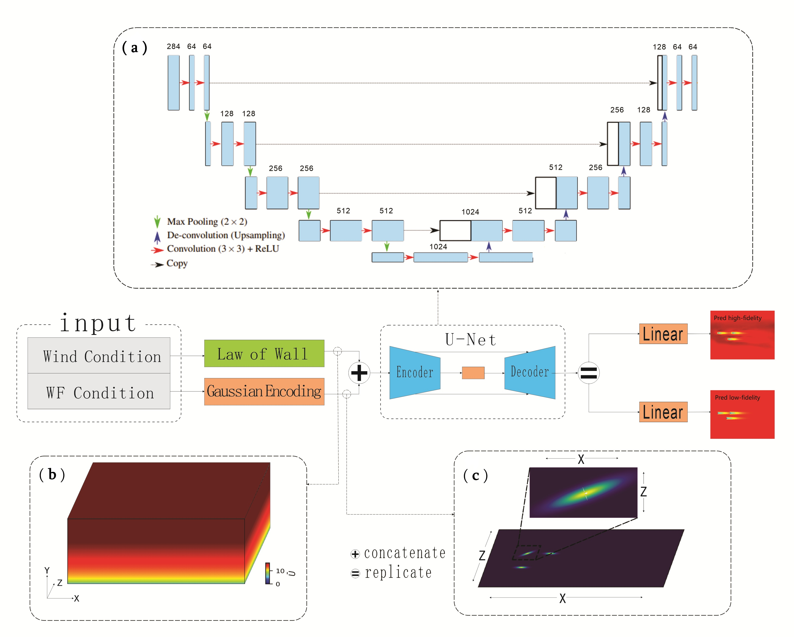
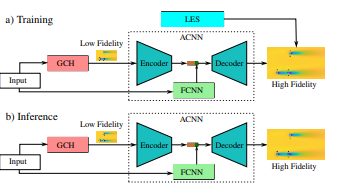
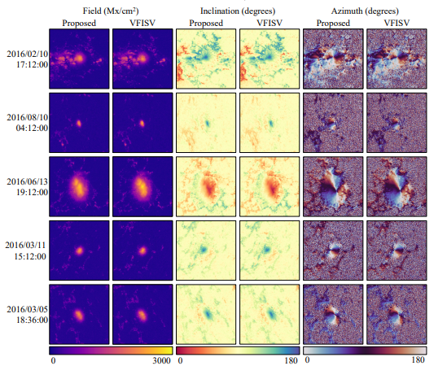

Dichang Zhang
I am a Ph.D. Candidate in Computer Science at Stony Brook University, advised by Prof. Dimitris Samaras. I have also been a visiting doctoral student at EPFL under the supervision of Prof. Pascal Fua. Before that, I completed my B.S. in CSE at the University of Michigan under the supervision of Prof. David Fouhey. My research focuses on machine learning for high-dimensional scientific simulations and multi-sensor observational data.
Email / CV / Google Scholar / GitHub


AS-Bridge: A Bidirectional Generative Framework Bridging Next-Generation Astronomical Surveys
In submission, 2026

Masked Pretrained CNN for Few-Shot High-Fidelity Fluid Dynamics Prediction
In submission, 2026

Adaptive Multitask Neural Network for High-Fidelity Wake Flow Modeling of Wind Farms
Energies, 2025

Toward ultra-efficient high-fidelity predictions of wind turbine wakes: Augmenting the accuracy of engineering models with machine learning
Physics of Fluids, 2024

Fast and Accurate Emulation of the SDO/HMI Stokes Inversion with Uncertainty Quantification
The Astrophysical Journal, 2021